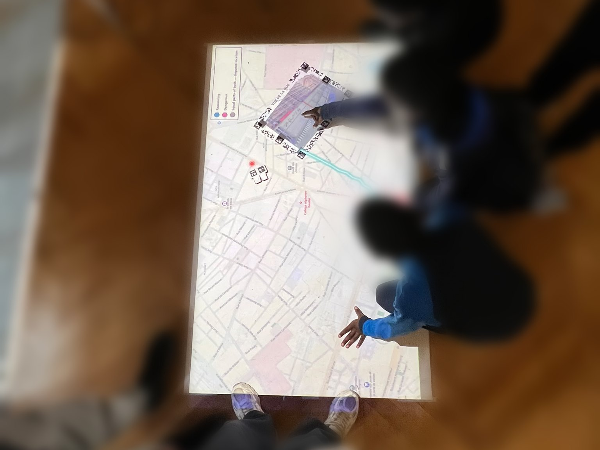

-

Ongoingi-MOBYL Tangible Mapping
A mapping tool for a five-country study of how 11-to-15-year-olds move through their city, turning the paper maps they mark into a live, projected picture of the whole class.
-

Evaluating Dark Patterns on Temu
A controlled study of how visible and subtle dark patterns affect attention, perceived manipulation, and purchasing behavior.
-

Magic Broom VR Locomotion
An embodied broom-flying technique for VR, combining leaning and controller input with calibration, portal mechanics, and a small user evaluation.
-

Co-Citation Visualization
An exploratory and interactive literature review system revealing shared foundations, topic bridges, citation flows, and which papers may be worth reading next.
-

Aphasia Transcription
An evaluation of speech-recognition systems for aphasic speech and the development of a practice tool for people with aphasia that highlights the errors they make.
-

Yu-Gi-Oh
A client-server desktop card game built as a first-year bachelor project at Sharif University of Technology.
-

Toward Low-Barrier Participatory Mapping Workshops
Marker-based cardboard tools that turn an ordinary table into a projected, interactive map, with four triggering mechanisms tested across three workshops.
-

Graph-RAG for Software Requirement Specfication
A Graph-RAG and prompt-engineering framework for automated requirement traceability and compliance checks in Software Requirements Specifications.